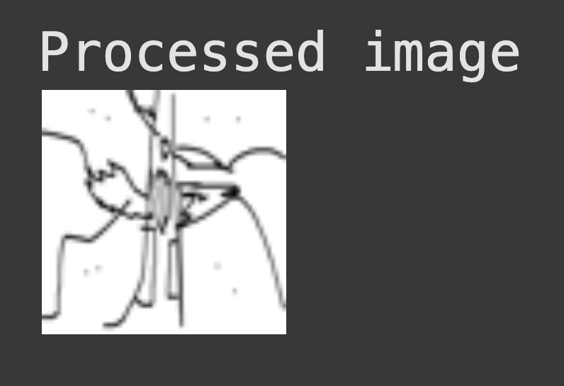
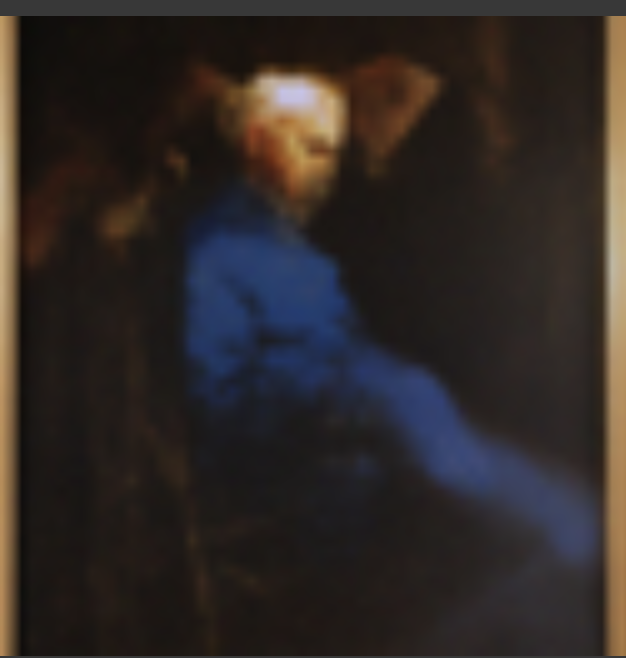
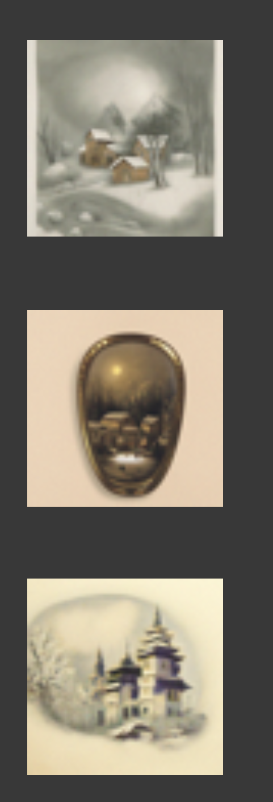
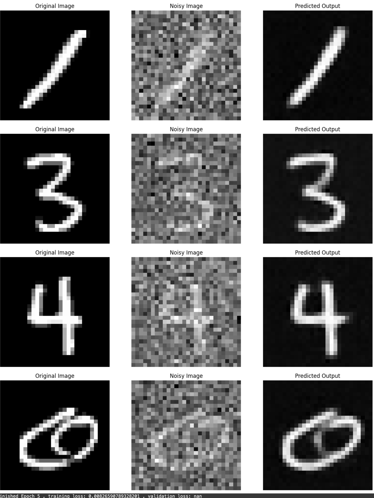
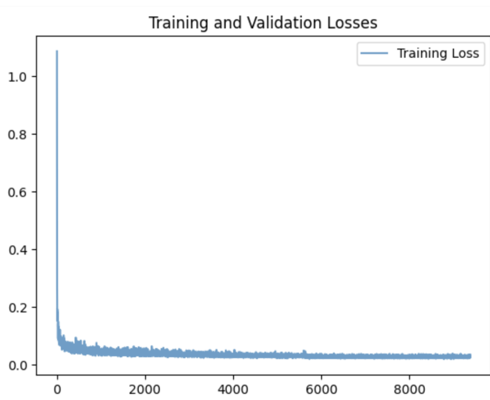

play around with diffusion models, implement diffusion sampling loops, and use them for other tasks such as inpainting and creating optical illusions.
Part 0 setup
SEED = 180
Running the model on the three text prompts with 20 de noising produces ok results. All three have some form of degeneration, The man is cross eyed, the colors of the painting are wrong, and the rocket ship is very simplistic.
(I can relate this to the style of the prompt.)
Running the model at double the number of denoising steps produces significantly better results. This is because...
1.1 Implementing the forward process
A key part of diffusion is the forward process, which takes a clean image and adds noise to it. we get a noisy image by sampling and scaling acording to some time schdule. The forward process is not just adding noise, it's also scaling the image.
the test image at noise levels [250, 500, 750]
Classical Denoising
One Step Denoising
Iterative Denoising
Diffusion Model Sampling
Classifier Free Guidance
Image-to-image Translation
Editing Hand-Drawn and Web Images
A key part of diffusion is the forward process, which takes a clean image and adds noise to it. we get a noisy image by sampling and scaling acording to some time schdule. The forward process is not just adding noise, it's also scaling the image.

Inpainting
Given an image and a binary mask, we can create a new image that has new content wherever the mask covers. we leave everything inside the edit mask alone, but we replace everything outside the edit mask with our original image -- with the correct amount of noise added for timestep t.
Text-Conditioned Image-to-image Translation
We can guide the projection of the image with a text prompt, converting thins into rockets for example:
Visual Anagrams
To create visual anagrams we will denoise an image at step t normally with one prompt and at the same time, we will flip the inmage upside down, and denoise with the prompt a different prompt, to get another noise estimate. We can flip the second noise estimate , to make it right-side up, and average the two noise estimates. We can then perform a reverse diffusion step with the averaged noise estimate.

Hybrid Images
Another cool visual ilussion. The proedure is to create a composite noise estimate epsilon by estimating the noise with two different text prompts, and then combining low frequencies from one noise estimate with high frequencies of the other.

Training a Single-Step Denoising UNet
Architecture:
Visualize the different noising processes over sigma = [0.0, 0.2, 0.4, 0.5, 0.6, 0.8, 1.0]
The model denoising at epoch 1, and 5

Training loss, model de noising over sigma = [0.0, 0.2, 0.4, 0.5, 0.6, 0.8, 1.0]
Adding Time Conditioning to UNet
We need a way to inject scalar t into our UNet model to condition it.
Results
Adding Class-Conditioning to UNet
To make the results better and give us more control for image generation, we can also optionally condition our UNet on the class of the digit 0-9.
Results

Coolest thing I learned
Clasifier free guidance is extremly cool and strange.
Information
This website contains transitions not captured by the pdf, spesificaly, the title image changes into a high gamma verison and then into the black and white threshold filter version.